01
Project direction
We begin with your work, your goals, your images and your references. This gives the project a clear direction and helps shape the structure of the site from the start.
I’m Lian Li, the designer and photographer behind L by Lian. I create calm, image-led websites and photograph gardens with an editorial eye, shaping digital spaces that feel clear, intentional, and beautifully structured. With over 20 years working as an advertising and editorial photographer in Paris and London, I approach web design with the eye of an art director — clarifying your story, refining your identity and translating it into a considered online presence.
Lian Li works with artists, creative studios, landscape architects and garden designers who need a curated and clear online presence. Services include UX/UI web design, garden photography, and image SEO and file preparation.
My garden photography is rooted in the quiet of UK and European landscapes and was recently featured in Gardens Illustrated (Digital). Earlier editorial and advertising work has appeared in titles including Elle, Cosmopolitan, Libération, Madame Figaro and Vanity Fair. I photograph in natural light and aim for a sensory, present feeling, as if you are truly there. I keep palettes authentic with natural colour and clean optics, with no distorted lens effects.
In design, I obsess over attention to detail and calm navigation. I want every page to feel considered, paced, and easy to move through, with typography and imagery doing the heavy lifting.
I do not use templates, visual clutter, or content for content’s sake. No noise, no filler, and no performative design. Just meaningful, story-led work shaped through genuine collaboration.
I offer UX/UI website revamps and bespoke builds for artists and creative studios, alongside bespoke garden photography and image SEO plus file preparation, so your pages stay beautiful, fast, and easy to find.
Selected commissioned work across magazines, portraits, and editorials.

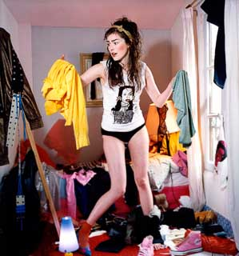
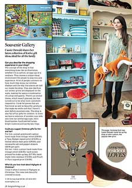
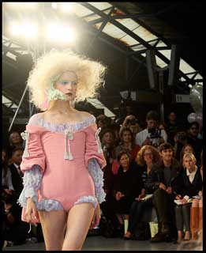
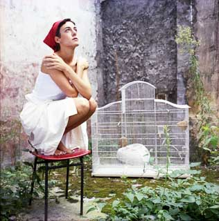
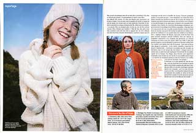
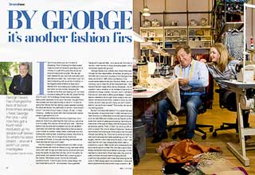
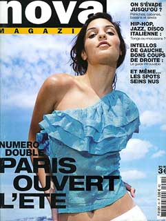
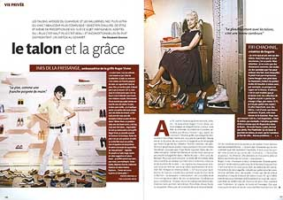
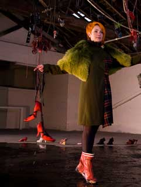
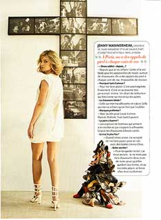
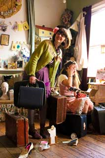
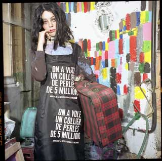
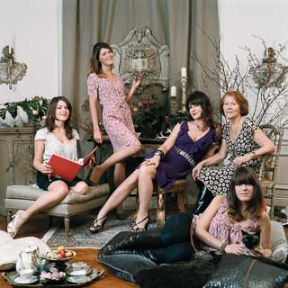
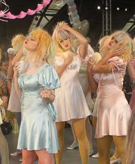
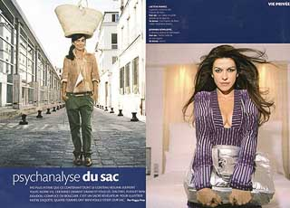
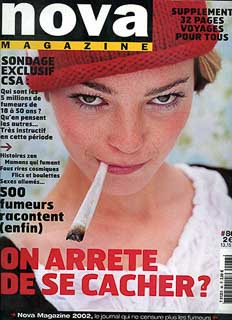
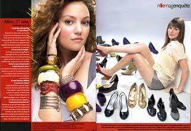
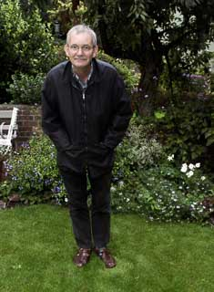
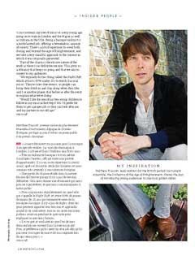
A clear, collaborative process shaped around your work, your images and the way you want to be seen online. Whether I am building a new site or refining an existing one, the aim is always clarity, confidence and a website that supports your practice properly.
We begin with your work, your goals, your images and your references. This gives the project a clear direction and helps shape the structure of the site from the start.
I organise the pages, navigation and hierarchy so your work feels easy to explore, easy to understand and comfortable to move through.
Typography, spacing, imagery and visual rhythm are designed with care so the site feels calm, considered and true to your identity. The design supports the work rather than competing with it.
Images are prepared carefully for the web so they remain beautiful while loading well. This includes optimisation, file naming and image SEO to help your work perform properly online.
The site is built and refined with attention to performance, responsiveness and accessibility, so every page holds together cleanly across devices.
Before launch we review everything together. You receive clear guidance for next steps and future updates, so the site feels ready to support your work long-term.